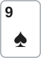
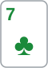
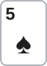
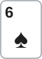
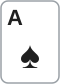
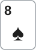
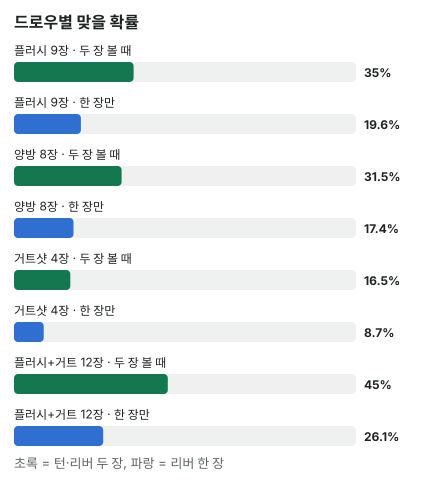

안녕하세요. 중급 첫 글이에요. 초급에서는 "우리 승률"을 늘 가정으로 받았죠(B14).
이제부터는 그 승률을 직접 구하는 법을 배워요. 첫걸음이 아웃츠예요. "플러시 드로우는 9장" 같은 말은 많이 들어 보셨을 텐데, 오늘은 그 숫자를 외우는 대신 한 장 한 장 직접 세어서 어디서 나오는지 확인해 볼게요. 그러면 처음 보는 드로우도 스스로 셀 수 있어요.
이 글에서 배울 것
- 아웃츠의 정확한 뜻, 그리고 "남은 카드 47장"에 상대 카드까지 넣어 세는 이유
- 플러시 9장·양방 8장·거트샷 4장이 나오는 과정, 그리고 네 장이 이어져도 4장뿐인 드로우
- 드로우가 두 개일 때 겹치는 카드를 한 번만 세는 법과, 아웃츠로 맞을 확률을 정확히 구하는 법
1단계. 아웃츠가 뭔가요?
정의 한 줄
아웃츠 = 다음에 나오면 우리 핸드를 "이긴다고 보는 핸드"로 만들어 주는 카드예요.
아직 완성되지 않은 핸드를 드로우라고 하죠. 드로우를 들고 있을 때 "어떤 카드가 나와야 하지?"를 세는 게 아웃츠예요. 여기서 "이긴다고 보는"이라는 말이 중요해요. 오늘은 플러시나 스트레이트가 되면 이긴다고 가정하고 세요. 완성돼도 지는 경우는 I04에서 따로 다뤄요.
그래서 오늘은 플러시와 스트레이트를 만드는 카드만 세요. 예를 들어 A♥K♥ 같은 핸드는 A나 K가 와서 높은 페어가 돼도 이길 수 있는데, 이런 오버카드 아웃츠는 상대가 무엇을 들었느냐에 따라 이기기도 지기도 해서 I04에서 함께 다뤄요.
퍼즐의 빠진 조각
비유하면 퍼즐의 빠진 조각이에요. 빠진 자리에 맞는 모양의 조각이 상자 안에 몇 개 남았는지 세는 거예요.
왜 47장일까
우리가 볼 수 있는 카드만 빼고 세요. 플랍에서는 우리 카드 2장과 보드 3장, 합쳐 5장이 보여요. 52 − 5 = 47장이 남은 카드예요.
"상대 카드 두 장도 덱에 없잖아요?" 하실 수 있어요. 맞아요, 실제로는 상대 손에 있어요. 하지만 그 두 장이 무엇인지 우리는 몰라요. 모르는 카드는 덱 속 카드와 똑같이 "아직 안 보인 카드"예요. 그래서 상대 카드도 47장 안에 넣어서 세요. 딜러가 카드를 깔기 전에 한 장씩 태워 버리는 번 카드도 같은 이유로 빼지 않아요. 무슨 카드인지 모르니까요.
2단계. 플러시 드로우 — 9장
Hero 보드
하트가 4장(Hero 2장 + 보드 2장) 보여요. 하트는 모두 13장이니 남은 하트는 13 − 4 = 9장이에요.
실제로 적어 보면 2♥ 3♥ 4♥ 5♥ 6♥ 8♥ 9♥ T♥ J♥, 이 9장 중 하나만 나오면 플러시예요. 무늬 하나에 13장이 있다는 것만 알면, 플러시 드로우는 언제나 13 − 4 = 9장이에요.
3단계. 양방 스트레이트 드로우 — 8장
Hero

보드
9-8-7-6이 이어져 있어요. 양쪽 끝인 5나 T가 나오면 스트레이트죠. 이렇게 양쪽이 다 열린 드로우를 양방(오픈엔디드)이라고 해요.
5가 무늬별로 4장, T도 4장이라 4 + 4 = 8장이에요. 실제로 세어 보면 5♠ 5♥ 5♦ 5♣ T♠ T♥ T♦ T♣죠.
4단계. 거트샷 — 4장
Hero 보드
J-?-9-8-7, 가운데 T 하나만 빠졌어요. 이렇게 한 군데만 비어 있으면 거트샷이에요. T만 4장 → 4장, 양방의 절반이죠.
양쪽이 열려 보여도 4장인 드로우
Hero 보드
A-K-Q-J, 네 장이 이어져 있으니 양방처럼 보여요. 그런데 A 위로는 더 높은 카드가 없어서 위쪽이 막혀 있어요. 스트레이트가 되는 건 T가 와서 A-K-Q-J-T가 될 때뿐이에요. 그래서 아웃츠는 T 4장, 거트샷과 같아요.
이게 무슨 뜻이냐면, 아웃츠는 "몇 장이 이어져 있나"가 아니라 "스트레이트를 완성하는 숫자가 몇 개인가"로 세야 한다는 거예요.
구멍이 두 개면 8장
Hero 보드

이번엔 반대예요. 이어진 네 장은 없지만, T가 오면 7-8-9-T-J, 6이 오면 5-6-7-8-9가 돼요. 완성하는 숫자가 두 개라서 6 4장 + T 4장 = 8장. 거트샷이 두 개 겹친 모양이라 더블 거트샷이라고 해요. 생김새는 달라도 양방과 아웃츠 수가 같아요.
5단계. 드로우가 두 개면 — 겹치는 카드는 한 번만
Hero

보드

Hero는 두 가지를 같이 노려요.
- 플러시: 남은 스페이드 9장
- 스트레이트: 7이 오면 4-5-6-7-8, 7이 4장
그냥 더하면 13장이에요. 그런데 7♠은 스페이드이면서 7이라 두 쪽에 다 들어가요. 한 장을 두 번 센 거죠. 그래서 9 + 4 − 1 = 12장이에요.
실제로 세어 보면 2♠ 3♠ 4♠ 7♠ 9♠ T♠ J♠ Q♠ K♠(스페이드 9장)에 7♥ 7♦ 7♣(스페이드가 아닌 7, 3장)이 더해져 12장이죠. 드로우가 둘이면 아웃츠가 확 늘지만, 겹치는 카드를 빼는 것을 잊으면 안 돼요.
6단계. 아웃츠로 맞을 확률 구하기
정확히 구하는 법
플러시 드로우(9장)가 턴·리버 두 장 동안 한 번이라도 맞을 확률을 구해 볼게요. "맞을 확률"을 바로 구하기보다, 두 번 다 안 맞을 확률을 먼저 구하면 쉬워요.
- 턴에 안 맞을 확률: 아웃츠가 아닌 카드 38장 / 47장
- 리버에도 안 맞을 확률: 남은 37장 / 46장
왜 반대쪽부터 구할까요? 한 번이라도 맞는 경우는 "턴에만, 리버에만, 둘 다"로 갈라져서 세기 번거로워요. 반면 안 맞는 경우는 턴도 리버도 아웃츠가 아닌 한 가지뿐이라 곱셈 한 번이면 끝나요.
두 번 다 안 맞을 확률 = (38/47) × (37/46) = 0.6503 맞을 확률 = 1 − 0.6503 = 0.3497, 곧 약 34.97%
세 가지 드로우를 한 표로
| 드로우 | 아웃츠 | 턴·리버 두 장을 다 볼 때 | 리버 한 장만 남았을 때 |
|---|---|---|---|
| 플러시 | 9 | 약 34.97% | 약 19.57% (46장 중 9장) |
| 양방 | 8 | 약 31.45% | 약 17.39% (46장 중 8장) |
| 거트샷 | 4 | 약 16.47% | 약 8.7% (46장 중 4장) |
| 플러시 + 거트(겹침 뺌) | 12 | 약 44.96% | 약 26.09% (46장 중 12장) |

"두 장을 다 볼 때"는 플랍에서 턴과 리버를 둘 다 본다고 가정한 값이에요. 턴에 상대가 크게 벳해서 리버를 못 볼 수도 있죠. 이 확률을 테이블에서 빠르게 어림하는 법(2·4 법칙)은 다음 글 I02에서 배워요.
왜 그럴까: 아웃츠는 왜 "숫자 개수 × 4"일까?
스트레이트는 숫자, 플러시는 무늬
스트레이트를 완성하는 건 숫자예요. 숫자 하나에는 무늬가 4개 있으니, 완성하는 숫자가 하나면 4장, 둘이면 8장이죠. 그 숫자는 아직 한 장도 보이지 않았어요. 보였다면 이미 스트레이트였을 테니까요. 그래서 스트레이트는 빼는 카드 없이 4장을 그대로 세요. 거트샷 4장, 양방 8장, 더블 거트샷 8장이 모두 이 규칙에서 나와요.
플러시를 완성하는 건 무늬예요. 무늬 하나에는 숫자가 13개 있고, 그중 4장이 이미 보이니 9장이 남아요. 그래서 플러시 드로우는 언제나 9장이에요.
그래서 겹치는 카드가 생겨요
스트레이트는 숫자로, 플러시는 무늬로 세니까, "그 숫자이면서 그 무늬인 카드"는 두 목록에 다 들어가요. 5단계의 7♠처럼요. 드로우가 둘이면 언제나 이 교차점을 한 번 빼야 해요.
상대 카드를 넣어 세도 되는 이유
상대 손의 두 장은 우리에게 덱 속 카드와 똑같이 보이지 않아요. 상대 손에 하트가 있을 수도 있지만, 없을 수도 있죠. 우리가 아는 정보로는 47장 중 어느 카드가 나올지 모두 똑같이 가능해요. 그래서 상대 카드까지 넣은 47장으로 세는 게 우리가 가진 정보로 할 수 있는 가장 정확한 계산이에요.
자주 하는 실수
실수 1. 상대 카드 두 장을 빼고 45장으로 세기 "상대도 카드 두 장을 들고 있으니 47 − 2" 하는 실수예요. 하트 9장으로 턴 한 장을 보면, 47장으로 세면 9 ÷ 47 = 약 19.15%, 45장으로 세면 9 ÷ 45 = 20%가 나와요. 그런데 상대 두 장을 빼려면 분자도 줄여야 해요. 그 두 장 안에 하트가 몇 장인지 알아야 하는데, 그걸 모르잖아요. 모르는 채로 평균을 내면 결국 47장으로 센 것과 같아져요. 대신 분모는 우리 눈에 보이지 않는 카드 전부, 플랍이면 47장이에요.
실수 2. 겹치는 카드를 두 번 세기 5단계에서 플러시 9장 + 스트레이트 4장을 그대로 더해 13장이라고 하는 실수예요. 7♠은 한 장인데 두 번 셌죠. 실제 아웃츠는 12장이에요. 대신 드로우가 둘이면 "숫자 목록과 무늬 목록에 다 들어가는 카드"를 먼저 찾아 한 번 빼요.
실수 3. 네 장이 이어지면 무조건 8장 A-K-Q-J처럼 끝이 막힌 드로우를 양방으로 착각하는 실수예요. 오늘 본 것처럼 A 위로는 카드가 없어서 T 4장뿐이에요. 대신 "이 스트레이트를 완성하는 숫자가 몇 개인가"로 세요. 반대로 이어진 네 장이 없어도 더블 거트샷처럼 8장일 수 있어요.
"아웃츠가 나오면 무조건 이기는 거예요?"
좋은 질문이에요. 꼭 그렇지는 않아요. 1단계에서 아웃츠를 "이긴다고 보는 핸드를 만드는 카드"라고 한 이유가 이거예요.
예를 들어 우리가 낮은 플러시를 맞췄는데 상대가 더 높은 플러시를 맞출 수도 있고, 우리 스트레이트가 완성되는 카드가 보드에 짝을 만들어 상대에게 풀하우스를 줄 수도 있어요. 이렇게 맞아도 지는 카드를 빼고 세는 법은 I04 "더러운 아웃츠"에서 다뤄요.
오늘 센 아웃츠는 그 출발점이에요. 먼저 정확히 세고, 그다음 깎아 내는 거예요.
선생님의 한마디
드로우를 들면 이렇게 습관을 들여요.
- 보드를 보면 먼저 이어진 숫자의 위아래가 막혔는지(A가 끝인지) 확인하기
- 아웃츠를 셌으면 카드 이름으로 한 번 적어 보기. 숫자로만 세면 겹치는 카드를 놓쳐요
연습 문제
홀덤학습 에퀴티 계산기에 같은 카드와 보드를 넣으면, 다음 카드별로 결과가 어떻게 바뀌는지 확인할 수 있어요.
문제 1. Hero K♠Q♠, 보드 J♦ T♣ 3♥. 스트레이트 아웃츠는? (위쪽이 막혔을까요?)
정답 보기
K-Q-J-T, 아래로 9가 오면 9-T-J-Q-K, 위로 A가 오면 T-J-Q-K-A → 4 + 4 = 8장(양방). 4단계의 A-K-Q-J는 A가 맨 위라 막혔지만, 오늘은 K가 맨 위라 A가 아직 위에 남아 있어요. 그래서 양쪽이 다 열려 있어요.
문제 2. Hero A♥K♥, 보드 Q♥ J♣ 4♥. 스트레이트 또는 플러시가 되는 카드는 모두 몇 장?
정답 보기
- 플러시: 하트가 4장(Hero 2장 + 보드 2장) 보이니 13 − 4 = 9장
- 스트레이트: A-K-Q-J는 위가 막혀 T만 → 4장
- 겹치는 카드: T♥ 1장
9 + 4 − 1 = 12장. 실제로 세면 하트 9장(2♥ 3♥ 5♥ 6♥ 7♥ 8♥ 9♥ T♥ J♥)에 하트가 아닌 T 3장이 더해져 12장이에요.
핵심 정리
- 아웃츠 = 다음에 나오면 우리 핸드를 이긴다고 보는 핸드로 만드는 카드. 분모는 안 보이는 카드 전부(플랍 47장, 상대 카드 포함)
- 스트레이트는 완성하는 숫자 개수 × 4, 플러시는 13 − 보이는 그 무늬
- 끝이 막힌 네 장은 4장뿐이고, 더블 거트샷은 8장이에요
- 드로우가 둘이면 겹치는 카드를 한 번만
- 정확한 확률은 1 − (두 번 다 안 맞을 확률)로 구해요
정리하며
오늘은 아웃츠를 외우지 않고 직접 셌어요.
플러시는 무늬로, 스트레이트는 숫자로 센다는 것 하나로 9장·8장·4장이 모두 설명됐고, 같은 규칙으로 끝이 막힌 드로우(4장)와 더블 거트샷(8장), 겹치는 카드를 빼는 법까지 이어졌죠. 마지막으로 두 번 다 안 맞을 확률을 먼저 구해서, 플러시 드로우가 끝까지 맞을 확률 약 34.97%를 정확히 계산했어요.
다음 글 I02에서는 이 정확한 계산을 테이블에서 몇 초 만에 어림하는 2·4 법칙을 배워요. 어림이 정확한 값과 얼마나 차이 나는지도 같이 봐요.
AI 작성 · 숫자는 계산 검증 (아웃츠는 실제 카드로 하나씩 센 결과)